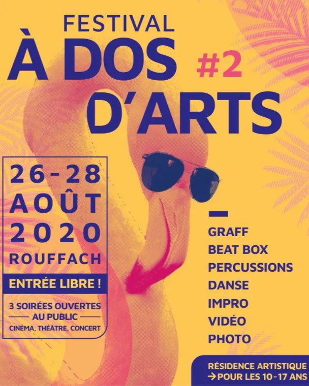
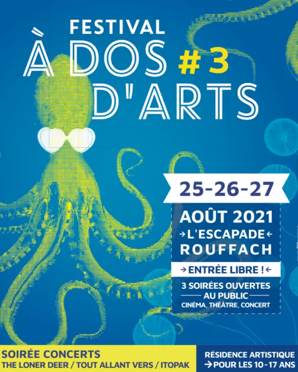
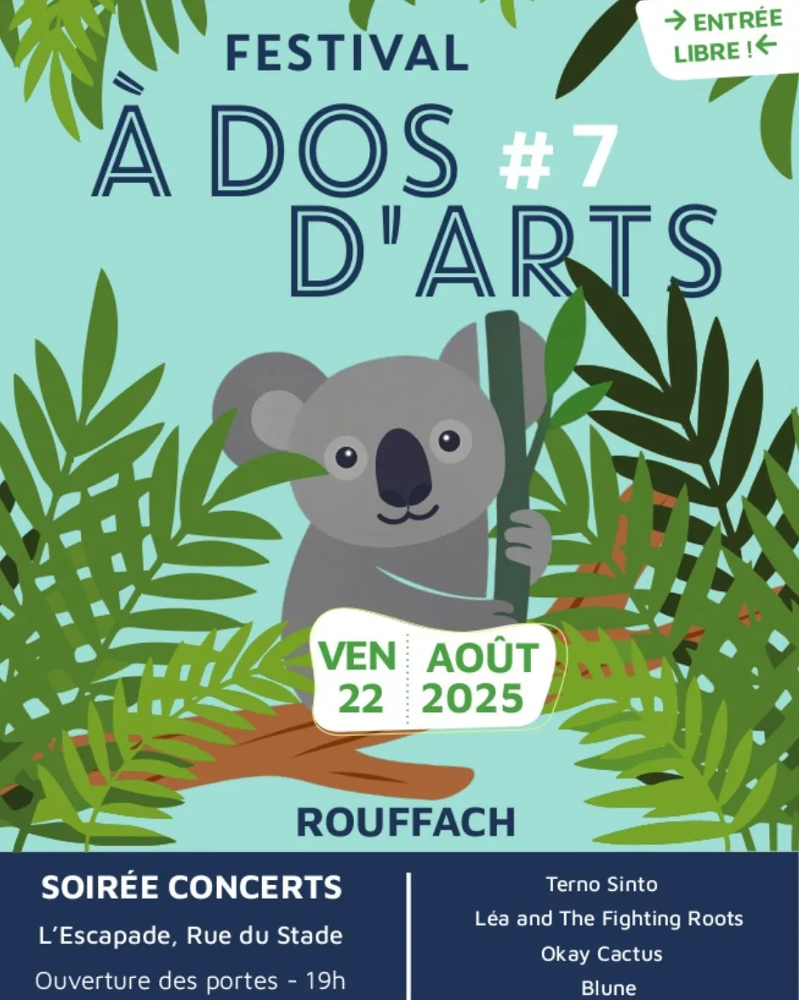

Soirée concerts & Scène ouverte · Entrée libre · 4 groupes, 2 scènes
Ouverture des portes dans


Garden party
Des animations et des espaces tranquilles pour vivre le festival en mode « backstage ». Plus d'infos à venir au courant de l'été, reviens vite !
La soirée
4 concerts, 2 scènes
Quatre groupes s'enchaînent dès 19h pour clôturer l'été en musique.
Chargement de la programmation…
Memories
8 éditions de souvenirs
Depuis 2019, le festival rythme la fin de l'été à Rouffach. Petit retour en images.






En images
Quelques instants des éditions passées, la galerie complète arrive bientôt.
Envie de donner un coup de main ?
Le festival vit grâce à ses bénévoles. Rejoignez l'aventure de la 8ᵉ édition.
Prêt à faire monter ton groupe sur nos planches ?
Vous faites de la musique et rêvez de jouer à À Dos d'Arts ? Proposez votre groupe pour une prochaine édition.
Ils rendent la soirée possible